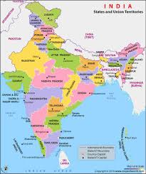
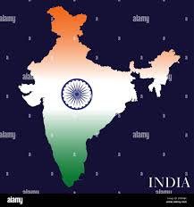
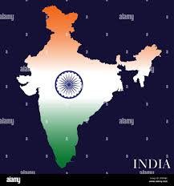

**WELCOME TO**
*INFORMATION*
Research Project: Why People Travelled to India in Ancient
Times
History: Key Reasons for Travel:-
1.Trade and Commerce: India was renowned for its wealth of
spices,
textiles,
precious stones, and other valuable commodities. Traders from
regions like Greece,
Rome, Persia, and China travelled to India to engage in commerce and
establish trade
routes.
2.Religious Pilgrimages: India was a significant center for
Buddhism, Hinduism, and later,
Islam. Pilgrims from China, Southeast Asia, and the Middle East
travelled to India to
visit sacred sites, study religious texts, and seek spiritual
enlightenment.
3.Education and Knowledge: Ancient India was home to renowned
centers of learning, such as
Nalanda and Takshashila. Scholars and students from various parts of
the world came to study
subjects like mathematics, astronomy, medicine, and philosophy.
4.Cultural Exchange: Travelers were also motivated by the
desire to experience and document the
rich cultural heritage of India. They were fascinated by India’s
diverse traditions,
languages, and customs, which they recorded in their travelogues.
5.Exploration and Adventure: Some travellers were driven by
curiosity and the spirit of
adventure. They wanted to explore new lands, discover new cultures,
and experience the wonders of India.
Geography: Routes and Features:-
1.Land Routes: The Silk Road was a major land route that
connected India with Central
Asia, the Middle East, and Europe. This route facilitated the trade
of silk, spices,
precious stones, and other valuable commodities.
2.Maritime Routes: The Indian Ocean served as a vital
maritime route for traders from
Africa, the Middle East, and Southeast Asia. These routes allowed
for the exchange
of goods, ideas, and cultures between India and distant lands.
3.Geographical Features: India’s favourable geographical
features, such as the fertile
plains of the Ganges, the rich forests, and the strategic location
along major trade
routes, made it an attractive destination for travellers.

 
